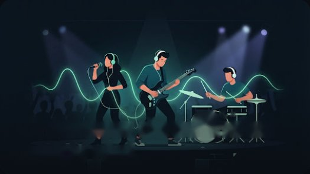

Intercom en temps réel
Appui pour parler ou micro ouvert. Anti-écho, anti-bruit, et une « portée du micro » qui ne transmet que la voix proche du téléphone.
Pour les musiciens, chefs d’orchestre et ingés son
Parlez à tout le groupe pendant le concert, sans matériel : vos téléphones et des écouteurs suffisent. En Wi-Fi local sans Internet, ou par la 4G.

Fonctions
BandTalk remplace l’intercom et les gestes de scène par vos téléphones, avec un son clair et un très faible délai.
Appui pour parler ou micro ouvert. Anti-écho, anti-bruit, et une « portée du micro » qui ne transmet que la voix proche du téléphone.
Un téléphone crée la session, les autres scannent son QR code. Fonctionne avec un routeur ou le partage de connexion du chef, même sans forfait.
Quand il n’y a pas de Wi-Fi commun : la session passe par Internet, avec suppression de bruit par intelligence artificielle.
Refrain, fin, alerte son… Un signal s’affiche en plein écran sur tous les téléphones, avec le décompte « one, two, three, four » calé sur le temps.
Le même clic, au même moment, dans les oreilles de tout le groupe.
Enregistrez une prise en haute qualité, réécoutez-la tout de suite et partagez-la avec le groupe (WhatsApp, e-mail…).
Comment ça marche
Touchez Créer une session, choisissez Wi-Fi local ou Internet. Un QR code et un code PIN s’affichent.
Touchez Rejoindre et scannez le QR code, ou tapez le PIN. C’est gratuit pour eux.
Chacun règle le volume de chaque musicien. Parlez, envoyez des signaux, lancez le métronome.
Télécharger
BandTalk se télécharge ici, directement (pas sur le Play Store). L’installation prend deux minutes.
Android
L’appli complète. Les mises à jour vous sont proposées dans l’appli.
Télécharger l’APK (87 Mo)Le lien de téléchargement n’est pas encore configuré.
Touchez le bouton vert depuis le téléphone Android. Le fichier BandTalk.apk arrive dans vos téléchargements.
Touchez la notification « Téléchargement terminé », ou ouvrez l’appli Fichiers › Téléchargements.
Si Android affiche « l’installation d’applications inconnues est bloquée » : touchez Paramètres, activez Autoriser cette source, puis revenez en arrière.
Touchez Installer. Si Play Protect affiche « Application non reconnue », touchez Plus de détails › Installer quand même : c’est normal pour une appli distribuée hors du Play Store.
Quand une nouvelle version sort, BandTalk vous prévient : touchez Mettre à jour, l’appli la télécharge et Android vous demande de confirmer. Vos réglages et enregistrements sont conservés. Vous pouvez aussi la télécharger ici et l’installer par-dessus.
Tarifs
Seul celui qui crée la session paie : les musiciens qui la rejoignent ne paient jamais.
Essai gratuit
0 FCFA
Sans carte, sans engagement.
BandTalk PRO
2 000 FCFA / 30 jours
Pour le chef d’orchestre, le leader ou l’ingé son.
Payer avec Wave, directement dans l’appli
Paiement par transfert aussi possible au +225 07 97 36 15 16 (activation après vérification).
Guide d’utilisation
Touchez une rubrique pour l’ouvrir.
À la première ouverture, touchez Continuer avec Google (le plus simple), ou choisissez S’inscrire : nom de scène, téléphone (celui de votre compte Wave), email et mot de passe. Le compte vous permet de garder votre abonnement, même en changeant de téléphone. Une connexion Internet est nécessaire pour cette étape.
Avec Google, BandTalk vous demande ensuite votre numéro Wave : il sert à reconnaître vos paiements automatiquement.
Une fois connecté, BandTalk fonctionne sur scène même sans Internet (sessions en Wi-Fi local).
C’est le mode le plus réactif. Tous les téléphones doivent être sur le même Wi-Fi :
Touchez Créer une session, donnez-lui un nom, choisissez Wi-Fi local. Le QR code et le PIN s’affichent : montrez-les aux musiciens.
Rejoindre une session est toujours gratuit.
Quand les musiciens ne sont pas sur le même Wi-Fi : créez la session en choisissant Internet. Les autres scannent le QR code. Chaque téléphone a besoin d’Internet (4G ou Wi-Fi), et la voix passe par des serveurs, avec un délai un peu plus grand qu’en Wi-Fi local.
Dans Réglages › Portée du micro (1,5 m par défaut), BandTalk coupe ce qui vient de loin : batterie, ampli, public. Faites une fois Calibrer ma voix : téléphone ou micro du casque à sa place habituelle, parlez normalement 5 secondes. Recommencez si vous changez de casque.
Dans l’onglet Studio, touchez Enregistrer : la prise est enregistrée en haute qualité (WAV 44,1 kHz). Réécoutez-la aussitôt, puis partagez-la avec le groupe (WhatsApp, e-mail…).
Les prises restent sur votre téléphone : rien n’est envoyé sur Internet.
Questions fréquentes
Non pour jouer en Wi-Fi local : un Wi-Fi commun suffit, même sans connexion Internet. Internet est nécessaire pour créer votre compte, payer l’abonnement, et pour les sessions en mode Internet.
Jusqu’à 8 téléphones par session.
Seulement la personne qui crée les sessions, après ses 2 sessions d’essai. Ceux qui rejoignent ne paient jamais.
L’essai gratuit est lié au téléphone : désinstaller puis réinstaller BandTalk, ou créer un autre compte, ne redonne pas de sessions gratuites. Une connexion à Internet est nécessaire une première fois pour activer l’essai.
Si vous avez payé avec le bouton Payer avec Wave de l’appli : revenez simplement dans BandTalk, l’abonnement s’active tout seul en quelques secondes. Si vous avez payé par transfert au numéro Wave : dans Compte › Abonnement, saisissez l’identifiant de la transaction ; l’activation se fait après vérification, en général en moins de 24 h.
Une session déjà ouverte continue normalement. L’abonnement ne concerne que la création de nouvelles sessions. BandTalk vous prévient 3 jours avant la fin.
Pour l’instant, BandTalk est distribué directement sur ce site. C’est pourquoi Android demande d’autoriser l’installation (voir « Télécharger »). Téléchargez BandTalk uniquement depuis ce site.
BandTalk fonctionne pour l’instant uniquement sur Android.
Votre compte (nom, email, téléphone), des statistiques d’utilisation (fréquence, durée, sessions créées) et, seulement si vous l’acceptez, votre ville. Votre position exacte, vos conversations et vos enregistrements ne sont jamais enregistrés par BandTalk. Tout est expliqué dans la politique de confidentialité.